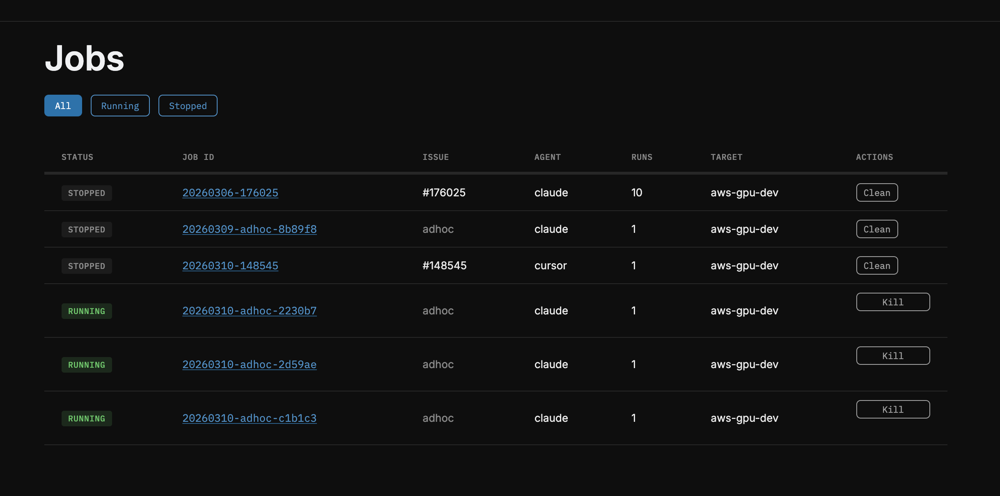
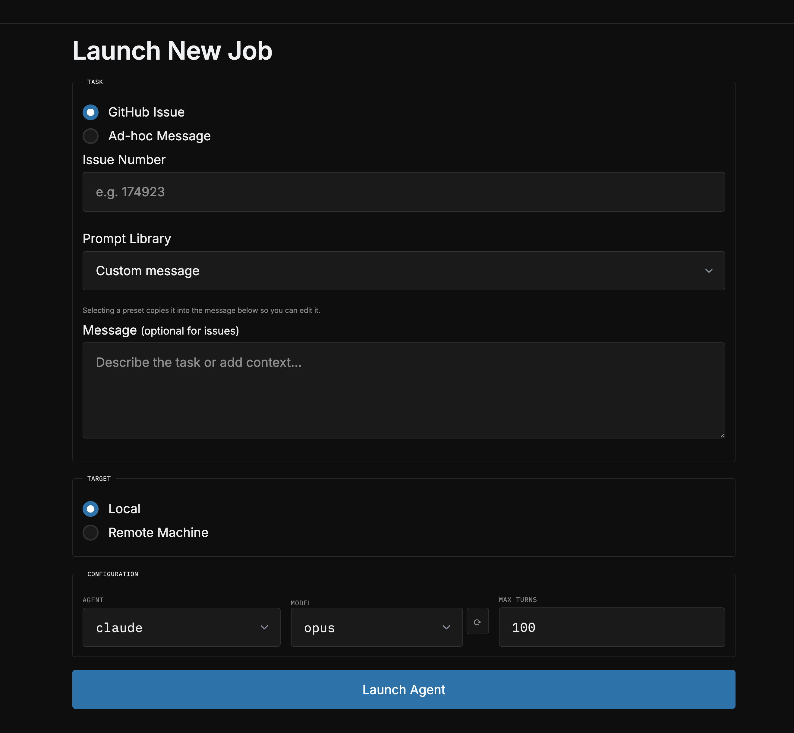
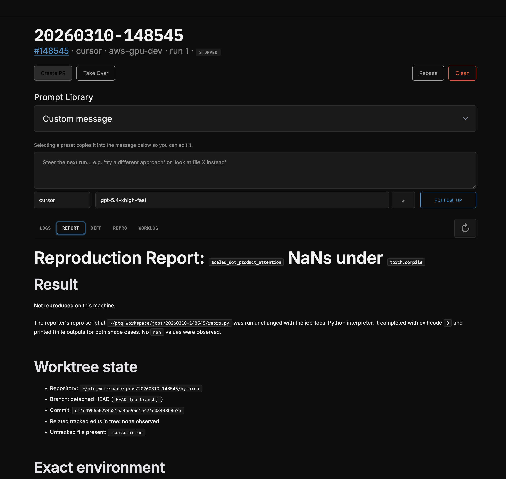
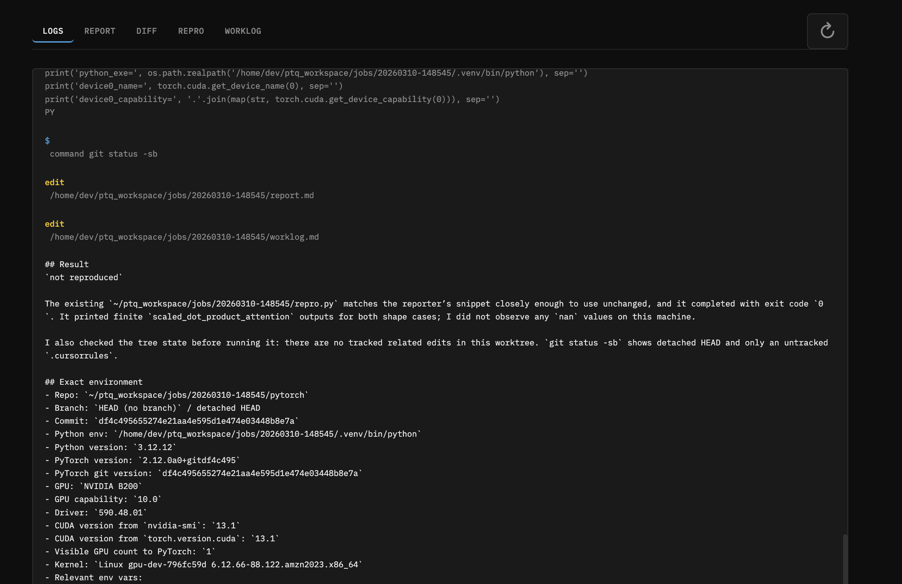
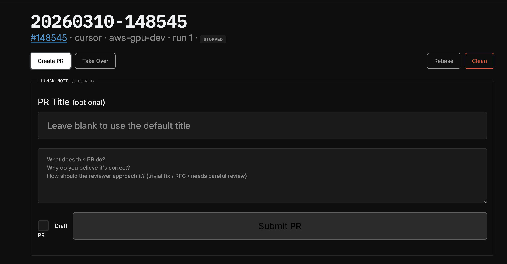

Written: March 12, 2026
Future Driss on April 25, 2026
I gave an internal talk about this and ill probably write a note on this subject. But I categorize AI code work as DFS vs BFS style workflows. This was my first real experiment in BFS style work on pytorch a notoriously hard to work with repo. I did have AI write many parts of this blog and it is much less in my voice (snake eating its tail and all / corpo life). That being said in the Month since I wrote this. I have basically 180. BFS style work gives me much less Joy and I find it soul sucking. It definitely has alot of practical value though. Go install Pi and read Marios’s blogs. I resonate with them highly. I am fearful that BFS will be the only way to get paid in the future. But for now, while I have agency and economic power I will do my best to lean in on DFS and use BFS where applicable. Happy clauding :)
TL;DR
I (agents) built ptq (PyTorch Job Queue) - a CLI + web tool that dispatches AI coding agents (Claude, Codex, Cursor) to remote GPU machines to autonomously investigate and fix PyTorch issues. You give it a GitHub issue number, it SSHes into a machine, sets up an isolated PyTorch dev environment in ~30 seconds, and turns an agent loose. You come back later, review the report and diff, and ship a PR.
Two PRs landed so far (#176559, #176243) and 4 stale SDPA backlog issues closed by re-verifying them with the tool. And one Alban PR :)
You can see it here: https://github.com/drisspg/pt_job_queue
Why I Built This
Two motivations:
1. Getting out of the hot loop with agents. The standard AI workflow is synchronous - you sit there, watch the agent think, steer it, wait for it. I wanted to design something where I could fire off 3-4 investigations in parallel and go do other work. The API is intentionally set-and-forget: launch a job, optionally check in later, review results when they’re done. I purposely designed the interface this way to discourage me from being in the loop as much as possible.
2. Can PyTorch work be parallelized? Each issue investigation is mostly independent - different bugs, different code paths, different repro scripts. The bottleneck has historically been environment setup. A full editable PyTorch build takes 10-30 minutes. To make parallel jobs practical I wanted to see how long to fresh env that can rebuild c++ only when needed.
The Fast Environment Problem
The main engineering problem was making isolated, C++-editable PyTorch environments cheap. Here’s what ptq setup creates once per machine, and what ptq run does for each job:
One-time setup (ptq setup):
- Clones PyTorch with submodules
- Builds a base venv with an editable install
- This takes a while, but you only do it once ( on my local dgx spark I have myclawd rebuild nightly. This legit could be a regular chron job though)
Per-job fast path (~30 seconds):
- Git worktree - Uses PyTorch’s
tools/create_worktree.pyto create an isolated branch/working directory. Shares the git object store. Thank you Nikita. This is actually the current bottleneck with ~10-25 seconds depending on disk speeds. - Venv clone via hardlinks -
cp -alof the base.venv. Hardlinks share disk blocks so this copies a multi-GB venv in seconds. - Build artifact sync -
rsync --link-destcopies compiled.sofiles into the worktree, again using hardlinks where possible. - Path rewriting -
sedrewrites editable-install metadata, shebangs, and activate scripts to point at the new paths. - Smoke test - Verifies
import torchworks and points at the worktree source.
If any step fails, it falls back to a full uv pip install -e . build. In practice the fast path works reliably and each new job gets a fully independent, C++-rebuildable PyTorch world.
How It Works
Launching a job
CLI:
# Investigate a GitHub issue
ptq run --issue 110505 --machine gpu-dev
# Ad-hoc task
ptq run -m "benchmark SDPA on Blackwell" --machine gpu-dev
# Use a prompt preset (repro-only, diagnose-and-plan, fix-and-verify, users can define their own in the config)
ptq run -p diagnose_and_plan --issue 174923
# Re-run with steering, this how you follow up with agents
ptq run 20260310-110505 -m "try looking at the cuda attention path instead"Web UI: ptq web launches a FastAPI dashboard where you can launch jobs, watch logs stream in real-time, view reports/diffs, create PRs, and manage everything from a browser.
Monitoring Runs

Launching new ones

Inspecting build artifacts and creating PRs

What the agent does
The agent gets a structured prompt with:
- The full GitHub issue body + comments
- Extracted repro scripts (any code block containing
import torch) - Exact paths to its isolated venv, worktree, and rebuild script
- Debugging tool instructions (compute-sanitizer, Inductor/Triton env vars)
- A 5-step workflow: Reproduce → Investigate → Fix → Test → Output
It maintains a running worklog so you can peek at progress. When done it produces report.md (root cause analysis) and fix.diff.

Reviewing and shipping
# Check what the agent found
ptq results 20260310-110505
# Apply the diff to your local pytorch checkout
ptq apply 20260310-110505
# Create a PR (opens $EDITOR for a mandatory human note)
ptq pr 20260310-110505
# Rebase onto latest main (agent auto-resolves conflicts)
ptq rebase 20260310-110505PRs require a mandatory human note - you have to describe what the change does and why it’s correct. The PR body includes your note, the agent’s report, the repro script, and the full worklog. This keeps the human accountable for what ships.

Results So Far
Landed PRs
Fix NaN outputs in nn.MultiheadAttention (#176559)
The native MHA fastpath only attempted SDPA when head_dim % 8 == 0. For non-multiples-of-8, it fell back to legacy fp16 ops that produced +inf logits and NaN outputs. The agent found the guard in attention.cu and removed the hard gate.
Fix CUTLASS mem-efficient attention on Blackwell (#176243) The kernel generator’s SM list ended at 100, leaving SM 120/121 (Blackwell) uncovered. The agent extended the sentinel to 122 and regenerated all 31 kernel files.
Closed Issues
Re-ran 4 stale SDPA backlog issues through ptq to verify whether they still reproduced on current nightly. They didn’t - closed them with repro attempts documented.
Design Decisions Worth Noting
- Agent-agnostic: Claude, Codex, and Cursor all implement the same
Agentprotocol. Adding a new agent backend is one dataclass + registry entry. - Human-in-the-loop PRs: The tool deliberately does NOT auto-create PRs. You review the diff, write a human note, and decide whether to ship. The agent does the grunt work; the human owns the decision.
- Context carry-forward: Re-runs append the prior worklog and report to the prompt, so the agent builds on previous attempts rather than starting from scratch.
- Prompt library: Built-in presets for different investigation depths - repro-only (just confirm the bug), diagnose-and-plan (find root cause, propose fix, stop), fix-and-verify (implement and test). But please bring your own.
- Take Over button: The web UI has a “Take Over” button that copies an SSH command dropping you directly into the job’s worktree with the venv activated. Useful when the agent gets close but you want to finish manually.
- Even if you didnt use the agents this might be nice for making little isolated PyTorch worlds for you
- Auto-rebase with conflict resolution:
ptq rebaserebases the worktree onto newer main and, if there are conflicts, launches an agent to resolve them. If the agent can’t figure it out, it escalates to you.
Try It / Questions
Happy to walk anyone through it or pair on getting it running. If you have a pile of stale PyTorch issues you’ve been meaning to look at, this is a good way to triage them in bulk.
I have been and will continue to guinea pig this flow. I think it is useable enough for folks. There are still some more things I want to do. And I push to main. Feel free to fork, edit, update to your needs.